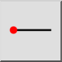
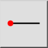
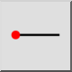
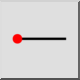

Горизонтальная линия
Панель инструментов / Иконка:
 

Меню: Начертить > Линия > Горизонтальная линия
Горячая клавиша: L, H
Команды: linehorizontal | lh
Это автоматический перевод.
Панель инструментов / Иконка:
 

Меню: Начертить > Линия > Горизонтальная линия
Горячая клавиша: L, H
Команды: linehorizontal | lh
Use this tool to create horizontal lines. This tool is used like the tool for lines at any given angle, except that the angle is fixed to be horizontal.